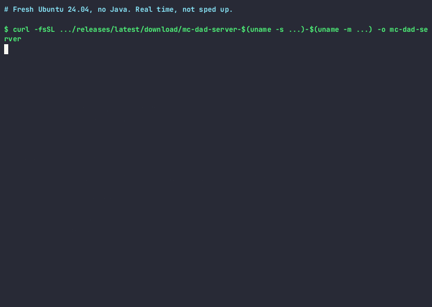

Minecraft server in about two minutes
A private Minecraft server for the family, set up with one command. Java and Bedrock cross-play, so Switch, iPad and phone players join too. Free and open source.
curl -fsSL https://github.com/KevinTCoughlin/mc-dad-server/releases/latest/download/mc-dad-server-$(uname -s | tr A-Z a-z)-$(uname -m | sed 's/x86_64/amd64/;s/aarch64/arm64/') -o mc-dad-server && chmod +x mc-dad-server && ./mc-dad-server install
Then run ./mc-dad-server start. On Linux and macOS the installer uses sudo for Java, the service and firewall rules, so it may ask for your password. On Windows, download the .exe below. Requires Java 25 and Paper 26.3; the installer installs Eclipse Temurin 25 when Java is missing or older. On Java 21 or Minecraft 1.21, use release v0.2.0. All releases
Ready before the holiday break
Christmas, New Year, winter or summer holidays: wherever you are, set it up once and the kids play all break.
-
Install it on a spare machine
An old laptop, a desktop or a Raspberry Pi works. Run the install command above, then
mc-dad-server start. First boot takes 40 to 60 seconds. -
Add the kids and their friends to the whitelist
The whitelist is on, so only players you add can join. Java players:
whitelist add NAMEin the server console. Switch, iPad and phone players:fwhitelist add NAME(Floodgate). -
Let cousins and friends join from their houses
Run
playitonce, claim the agent and create a Minecraft tunnel tolocalhost:25565. Share the address with the other parents. No port forwarding, no home IP shared. -
Pick the right difficulty
The default is normal. For younger players, install with
--difficulty peacefulor--difficulty easy. -
Set up a parkour challenge
mc-dad-server setup-parkourcreates a flat parkour world to build courses in. For five ready-made maps, run the map install script, then rotate the featured map withmc-dad-server rotate-parkour. -
Then leave it alone
It starts on boot (systemd or launchd), restarts after a crash and backs up the world every night at 4 AM, machine time. Take a manual backup before big builds with
mc-dad-server backup.
Batteries Included
Everything your kids need, pre-configured and ready to go.
- 📱 Geyser + Floodgate Kids on iPad, Switch, and phones connect to your Java server. No second account needed.
- 🏃 Parkour Build obstacle courses. Checkpoints, leaderboards, death counters. Kids go nuts for this.
- ✏️ WorldEdit Fast course building. //set, //stack, //copy — build a parkour map in minutes.
- 🌍 Multiverse-Core Separate worlds for parkour, creative, survival. Keep things organized.
- 💬 ChatSentry Configurable chat filter with blocked words list. Kid-safe by default.
- 🗺️ 5 Pre-built Parkour Maps Curated maps from Hielke Maps — Parkour Spiral, Spiral 3, Volcano, Pyramid, Paradise. Installed with one script.
What You Get
Production-ready from the first run.
- ☕ Eclipse Temurin Java 25 Required. Paper 26.3 does not start on Java 21. The installer installs Temurin 25 when your Java is older.
- 🚀 Paper 26.3 Required Minecraft server line, build 233 or newer. Same game, better performance, plugin-ready.
-
🛡️ Kid-Safe Defaults
Whitelist on, real Minecraft accounts only, chat filter installed. Choose
--difficulty peacefuloreasyfor little ones. - 🔄 Auto-Start on Boot systemd (Linux) or launchd (macOS) starts it on boot and restarts it after a crash.
- 💾 Daily Backups Automatic backups at 4 AM with rotation. Never lose a build.
- 🌐 No Port Forwarding Optional playit.gg tunnel — friends connect without touching your router.
- 🐳 Docker / Podman Image base is eclipse-temurin:25-jre-alpine. Health checks, graceful shutdown, Quadlet systemd integration.
See it in real time
Not sped up. A fresh Ubuntu 24.04 machine with no Java.

Works Everywhere
Linux, macOS, Windows — wherever you've got a spare machine.
- Ubuntu / Debian
- Fedora / RHEL
- Arch Linux
- macOS
- Windows (x64 / ARM64)
- WSL2 (Windows)
- Docker / Podman
- Raspberry Pi
Options
Sensible defaults, full control when you need it.
| Flag | Default | Description |
|---|---|---|
--edition | java | java or bedrock |
--type | paper | paper, fabric, or vanilla |
--dir | ~/minecraft-server | Install location |
--memory | 2G | RAM allocation |
--port | 25565 | Server port |
--difficulty | normal | peaceful, easy, normal, hard |
--gamemode | survival | survival, creative, adventure |
--players | 20 | Max player count |
--gc | g1gc | g1gc (Aikar's flags) or zgc |
--motd | Dads Minecraft Server | Message of the day |
--whitelist | true | Only approved players can join (--no-whitelist to turn off) |
--playit | true | Set up playit.gg tunnel (--no-playit to skip) |
--chat-filter | true | Install chat filter plugin (--no-chat-filter to skip) |
--mc-version | 26.3 | Minecraft version. latest stays at or below 26.3. 26.4 and snapshots are refused. |
--experimental-bun | false | TypeScript/JS scripting sidecar |
--mode | auto | auto, screen, or container (global flag) |
FAQ
How long does setup take?
How much RAM do I need?
Can my kids on Switch, iPad or phones join?
fwhitelist add NAME.Can my kids' friends connect from their house?
Can I add mods?
--type fabric for mods; the Paper plugins are not installed then. Paper (the default) runs plugins, a different ecosystem.What's Paper MC?
G1GC or ZGC?
What Java and Minecraft versions are required?
Is this safe?
Can I run this in Docker/Podman?
podman compose up -d or docker compose up -d. The CLI auto-detects container mode, or use --mode container. Includes health checks, graceful shutdown, and Quadlet systemd integration.What if my server crashes?
Support the Project
Got a few quiet days over the break? A license or a sponsorship keeps it maintained.
Is it free?
What does a license do?
How do I activate a license?
mc-dad-server activate-license --key YOUR-KEY to activate. See the store for details.